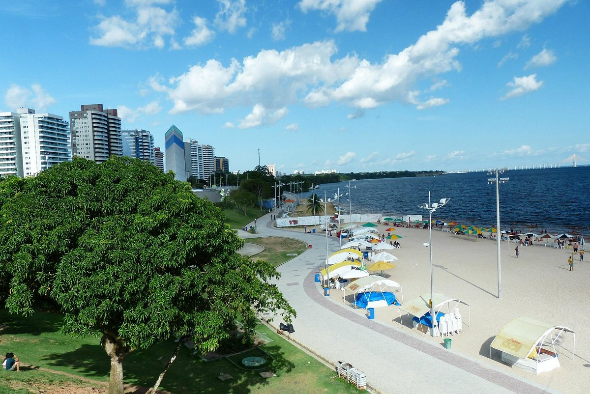

|  |
Inicialmente habitada pelos índios Manaós, hoje o bairro de Ponta Negra é um dos locais mais nobres e turísticos da cidade de Manaus. Com uma infraestrutura admirável e de tirar o fôlego, Ponta Negra é considerada o lugar de encontro ideal para toda e qualquer pessoa, independentemente da idade. |